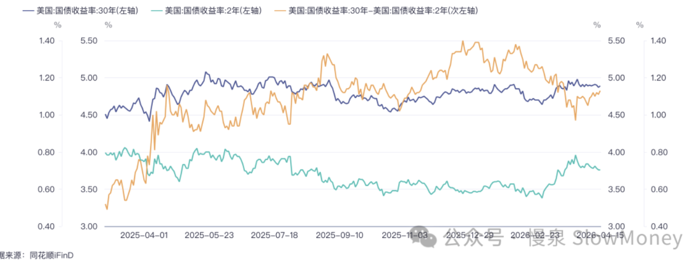
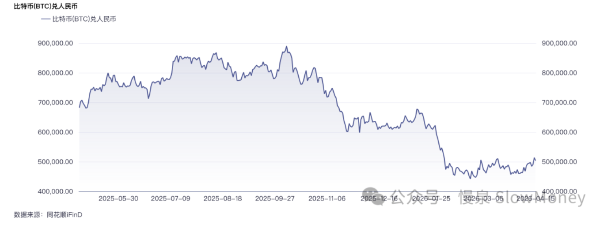

宏观讨论20260416-美债和比特币
2026-04-16 · 美债和比特币 · 宏观讨论（补档）
一边是滞胀交易下重新平坦化的美债曲线，一边是回撤一半后企稳三个月、跟着股市风险偏好起舞的比特币。
美债走势
2026 年以来，美债特别是 30 年美债的波动依然运行在 4.5%-5% 的区间。3 月份油价上涨之后，影响最大的是 2 年美债，最大上跳接近 80bp 至 4.0%。
曲线陡峭化的趋势逆转，平坦化。对短期通胀和长期经济增长的担忧——也就是滞胀交易——推动了曲线回到一年前的斜率。美债走势很大程度上反映了市场对于今年降息次数的调整，以及延缓降息、油价上涨对经济的负面预期。

比特币走势
高点在 2025 年 9-10 月份，纳斯达克高点附近——美联储第一次和第二次降息之间。此后大幅下跌至高点的 50% 左右，过去的三个月基本稳定。
3 月份的冲突影响不大，比特币跟随权益的风险偏好：股市上涨时比特币走强，股市下跌时比特币走弱。

操作（模拟）
- 债券继续建仓、持有收息。通胀和衰退哪个先到谁知道，30 年美债 4.9%、10 年 4.5% 附近分别对半建仓 TMF 和 TLT。TMF 的杠杆属性决定交易价值远远大于持有价值，所以债券收益率下行至（30 年 4.5%、10 年 4% 附近）要敢于交易，降低债券杠杆。
- 比特币尝试小幅建仓 MSTR 和 COIN，学习为主。未来的 AI 机器人用什么结算？
未来展望
美国经济通胀下不去条件下的就业改善，意味着当下美债收益率也许要在高位维持更长的时间，同时也意味着市场对经济的预期不悲观——油价的上涨使得「即使不降息、经济也稳步增长」成为一种 option。那么当下的 4.9% 的长期美债并不见得有超预期的风险；而如果油价下来了、就业恶化，美债就会回到区间下沿。
交易思路：做 TMF，看准机会不盲目多，也不死拿。
比特币——如果风险偏好上升，它和纳斯达克，谁的弹性大？
原文 / 观点：Matt · johsnon0827@gmail.com